“Yangın söndürme sistemlerine gaz yerine su ve hava basabilirler, dikkat”
Otomatik yangın söndürme tesisatlarında sahte ekipman ve merdiven altı dolum risklerine karşı can güvenliğini teminat altına alan orijinal mühendislik uyarısı.
Can ve mal güvenliğiniz için yangın söndürme sistemleri kurulum, montaj, devreye alma, bakım ve mühendislik hizmetleriyle yanınızdayız.
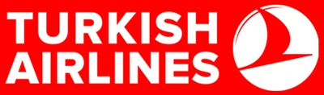
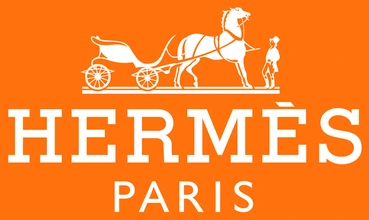
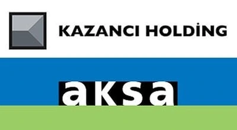
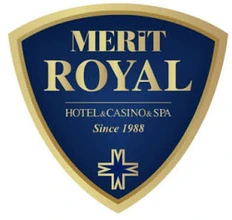
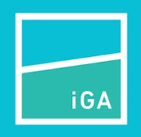
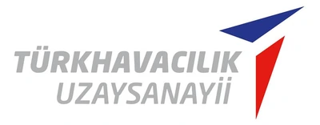
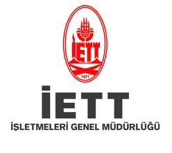
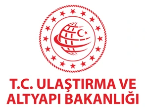
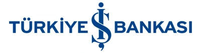
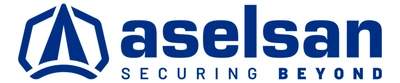
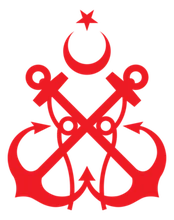
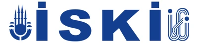
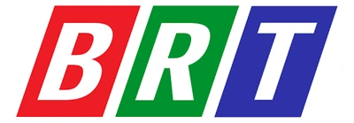
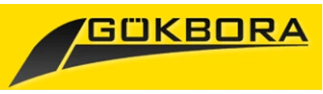
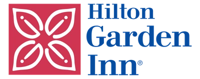
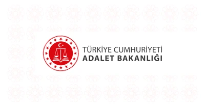
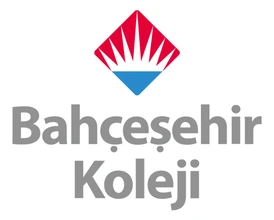
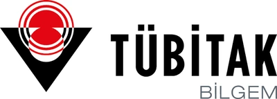
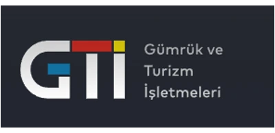
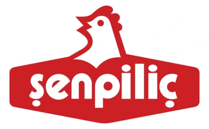
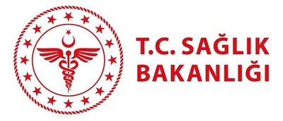
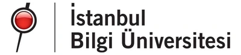
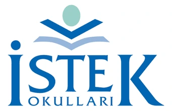
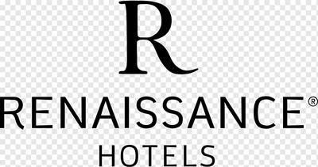
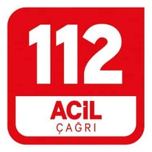
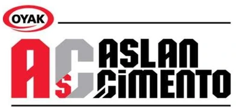
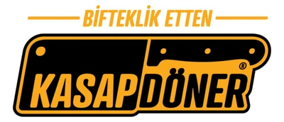
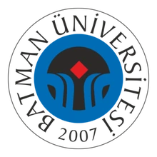
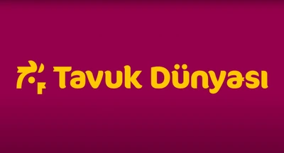
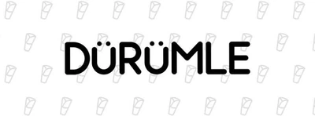
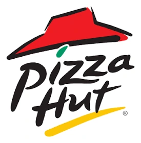
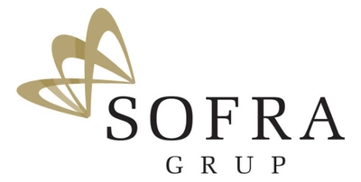
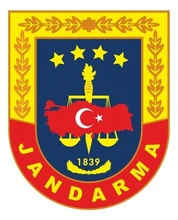
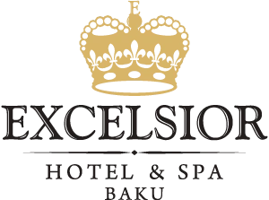
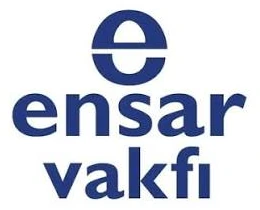
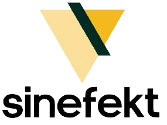
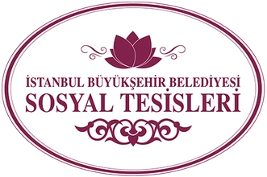
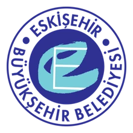
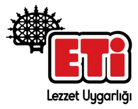
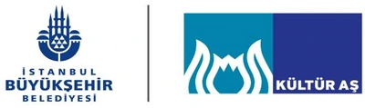
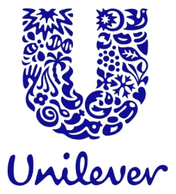
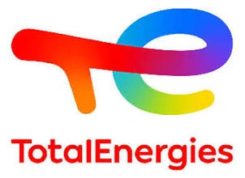
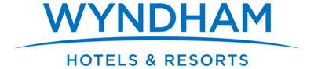
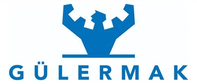
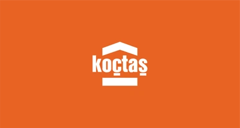
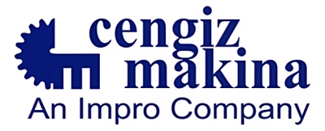
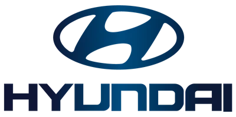
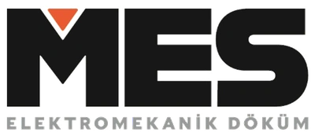
Firmamız 2011 yılında kurulmuş olup gazlı yangın söndürme sistemleri, algılama ve periyodik bakım alanında mühendislik odaklı hizmet vermektedir. Hareket noktası Koşulsuz Müşteri Memnuniyeti olan Fenix Yangın, kritik altyapıların korunmasında güvenin adresidir.
Tüm süreçlerimiz uluslararası standartlara tabidir.
Kurumsal profil ve belgelerimiz →Tesisin kullanım amacı, içindeki ekipmanın niteliği ve ortamdaki insan varlığı doğru söndürme yaklaşımını belirler.
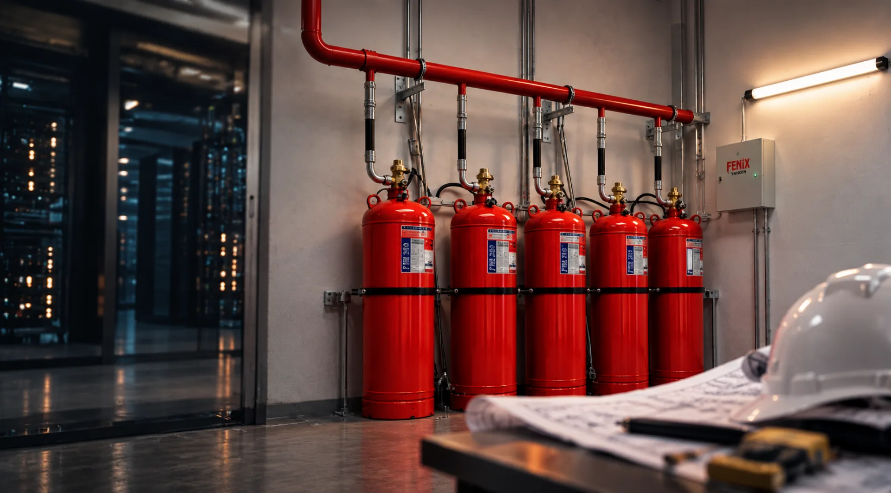
Kesintisiz çalışma zorunluluğu olan BT altyapılarında kalıntı bırakmayan temiz gazlı söndürme ve çapraz bölgeli algılama.
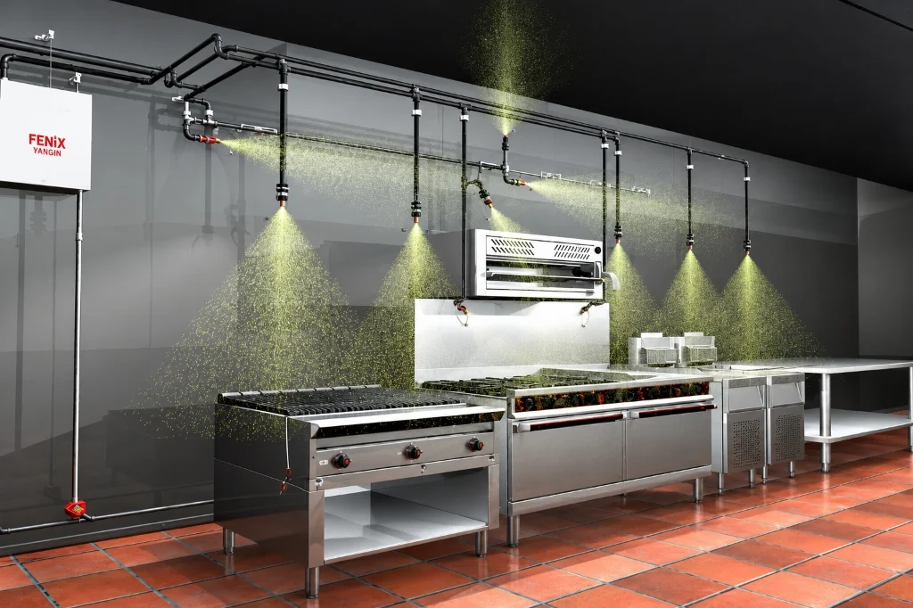
Yoğun yağ buharı ve açık alev riskine karşı ocak, filtre ve baca kanallarında mekanik ve eriyen telli otomatik koruma.
Yüksek gerilim ve jeneratör alanlarında oksijeni boğarak yangını saniyeler içinde etkisiz kılan karbondioksitli çözümler.
Tarihi evrak, el yazması ve sanat eserlerine su veya kimyasal temas ettirmeden sıfır kalıntıyla yangın söndürme güvencesi.
Ameliyathane, MR/BT odaları ve kritik medikal ekipmanlarda insan sağlığına zararsız, kesintisiz çalışan gazlı koruma.
Üretim hatları, endüstriyel prosesler ve ana dağıtım panolarında ağır sanayi şartlarına dayanıklı entegre yangın güvenliği.
Baz istasyonları, santral odaları ve 19 inç sunucu kabinlerinde dar alanlara tam uyumlu noktasal söndürme modülleri.
Tesisinizdeki yangın riskine ve ortam türüne göre en doğru mühendislik çözümünü seçin.
Sunucu odası, veri merkezi, UPS & akü odası, telekom santrali.
10 saniyede deşarj olur, kalıntı bırakmaz, elektrik iletmez, elektronik cihazı korur.
Müze, tarihi kütüphane, kıymetli evrak arşivi, hassas test laboratuvarı.
Sıvı formda depolanır, 0 ozon tüketimi, anında buharlaşır ve geri dönüşsüz mirası korur.
Trafo merkezleri, yüksek gerilim odaları, jeneratör hacmi, kablo galerisi.
Yüksek boğma ve termal soğutma gücü. Büyük endüstriyel hacimlerde en ekonomik çözüm.
Konteynerler, GSM baz istasyonları, rüzgar türbinleri, kompakt teknik odalar.
Basınçlı tüp ve borulama hattı gerektirmez, dar hacimlerde pratik ve katı yakıtlıdır.
Otel, restoran ve yemekhane endüstriyel mutfakları, fritöz ve ızgara ocakları.
Sıvı kimyasal köpük (sabunlaşma) ile yağ yangınını boğar ve yeniden parlamayı engeller.
AG/OG elektrik dağıtım panoları, kompanzasyon ve server rack kabinleri.
Yangını panonun içinde ilk saniyede algılayıp bastırır, tüm tesisin durmasını önler.
Fabrikalar, veri merkezleri, plazalar ve gazlı söndürme kurulu tüm mahaller.
Çapraz bölgeli (cross-zone) optik ve duman kurgusu ile asılsız gaz deşarjını sıfıra indirir.
FM200 veya Novec 1230 gazlı söndürme kurulmuş tüm sızdırmaz mahaller.
10 dakikalık tutunma süresi sahada ölçülüp belgelenmeden hiçbir gazlı sistem kabul edilemez.
Mahal hacmi ölçülür, yapısal kaçak noktaları, havalandırma damperleri ve yangın yükü analiz edilir.
ISO 14520 ve NFPA 2001 gereğince tasarım konsantrasyonu, nozul yerleşimi ve dolum kütlesi hesaplanır.
Dikişsiz çelik boru hatları, basınç emniyet donanımları ve onaylı manifold bataryası sahada monte edilir.
Çapraz bölgeli duman dedektörleri, söndürme kontrol paneli ve klima/damper durdurma senaryosu entegre edilir.
Akredite oda sızdırmazlık testi uygulanarak 10 dakikalık gaz tutunma süresi sahada kanıtlanır ve raporlanır.
TSE-HYB onaylı kabul dosyası teslim edilir; 6 aylık periyodik kontroller ve yerinde gaz dolumuyla sistem korunur.
Projelerimiz müşteri gizlilik sözleşmeleri ve teknik onay esaslarına bağlı kalınarak yayınlanır. Tamamlanan gazlı yangın söndürme ve door fan testi uygulamalarımızı inceleyin.
Otomatik yangın söndürme tesisatlarında sahte ekipman ve merdiven altı dolum risklerine karşı can güvenliğini teminat altına alan orijinal mühendislik uyarısı.
Kompleks yapılarda doğru algılama ve söndürme sistemi seçimi, merdiven altı ürün riskleri ve mühendislik keşif ilkelerine dair uzman değerlendirmesi.
Fenix Yangın'ın yangın algılama ve söndürme teknolojilerindeki yerli mühendislik kapasitesi ve uluslararası sektör ortaklık ilgisine ilişkin arşiv haberi.
Kapalı otopark ve açık şarj istasyonlarında lityum-iyon batarya yangın riskleri, termal kaçak yönetimi ve NFPA 855 odaklı koruma çözümleri.
İncele →İnsanlı mahaller, veri merkezleri ve hassas elektronik alanlar için kalıntı bırakmayan, ozon dostu temiz gazlı söndürme çözümü.
İncele →Yüksek hızlı talaşlı imalat ve yağ bazlı soğutma sıvılarında saniyeler içinde alev baskılama, CO2 ve temiz gazlı koruma mimarisi.
İncele →Endüstriyel mutfaklarda kızgın yağ yangınlarına karşı mekanik/eriyen telli algılama ve potasyum karbonat bazlı ıslak kimyasal söndürme.
İncele →Projelendirme ve devreye alma süreçleri İstanbul’daki merkezimizden yürütülür. Kurulum ve bakım hizmetlerimizi Türkiye genelinde ve yurt dışındaki proje ağımızla sürdürüyoruz.
Mahal görülür, hacim ölçülür, sistem gerekçesiyle önerilir.